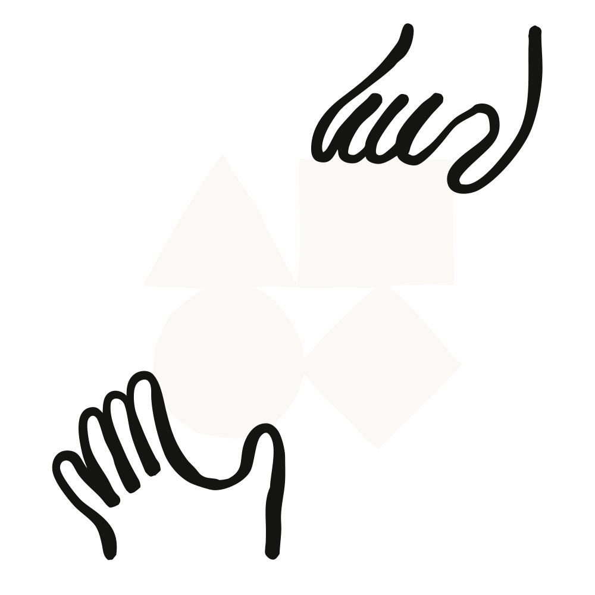

对齐 2026年5月7日

2025 年 10 月，我们推出了 Petri，一个可以应用于任何大语言模型的开源对齐测试工具箱。Petri 是作为我们 Anthropic Fellows 计划的一部分开发的，可以用来快速、轻松地测试 AI 模型的令人担忧的倾向，如欺骗、谄媚和与有害请求合作。它是我们为整个 AI 开发社区开发开放且有用的对齐工具的努力的一部分。 自 Claude Sonnet 4.5 以来，Petri 一直是我们每个 Claude 模型对齐评估的一部分。它比较新模型在一系列对齐相关场景中的行为，这些场景由一个单独的"审计者"（auditor）模型模拟。然后，一个进一步的"评判者"（judge）模型对产生的对话记录中的错位行为进行评分。 我们很高兴看到 Petri 被外部组织使用：例如，英国的 AI 安全研究所（AISI）把它作为评估模型破坏 AI 研究倾向的主要部分。 我们现在正在把 Petri 更新到第三个版本。以下是一些最大的变化： * 适应性。 Petri 3.0 涉及重大的架构变化，允许用户把它适应更多用途，特别是把审计者模型和目标模型拆分为可以单独调整的独立组件； * 真实性。 尽管对齐研究人员试图让测试看起来真实，但模型通常可以从设置中的各种人为痕迹推断出它实际上是测试的一部分。如果模型知道自己在被评估，研究人员就无法再看到模型_总体上_的行为方式。Petri 的一个附加组件——我们称之为"Dish"——让设置变得真实得多，例如使用模型的真实系统提示词和真实部署中会使用的真实"脚手架"（包裹在模型周围、帮助它达成目标的软件）来运行测试； * 深度。 我们现在已经把 Petri 与我们另一个开源对齐工具 Bloom 集成，后者可以对特定选定的行为进行更深入的评估（与 Petri 更广泛的方法相比）。我们还给 Petri 找了一个新家。我们已把它的开发移交给 Meridian Labs，一个 AI 评估非营利组织。这一举措——类似于我们当初把模型上下文协议（Model Context Protocol, MCP）捐赠给 Linux 基金会——将有助于确保 Petri 保持独立于任何 AI 实验室，使其结果被行业内外视为中立和可信。 作为 Meridian Labs 的一部分，Petri 加入了 Inspect 和 Scout 等其他工具，构建了一个对实验室、独立研究人员和政府都开放的技术栈，而在这个时代，可靠的 AI 模型行为测试比以往任何时候都重要。 你可以在 Meridian Labs 博客 上阅读更多关于 Petri 3.0 的内容。 安装和使用 Petri 的说明可以在 Petri 网站 上找到。
Claude 的一个未发布研究版本在与黎曼猜想相关的问题上取得了进展。它改进了一个长期存在的下界——满足该猜想的黎曼 zeta 函数零点比例的下界——将其从 41.6% 提高到 67.2%。 阅读更多
密码算法。第一个攻击显著削弱了 HAWK——一种为未来量子计算机能够破解现有标准的时代而设计的数字签名方案。第二个攻击确定了一种攻击减轮 AES（最广泛使用的对称密码）的新方法。 阅读更多
我们与 Andon Labs 合作，开发了一系列评估 AI 模型使用飞行无人机能力的新评估，最终形成一个新的基准：Drone-Bench。 阅读更多
Alignment
May 7, 2026 In October 2025, we launched Petri, an open-source toolbox of alignment tests that can be applied to any large language model. Petri, which was developed as part of our Anthropic Fellows program, can be used to rapidly and easily test AI models for concerning tendencies like deception, sycophancy, and cooperation with harmful requests. It’s part of our efforts to develop alignment tools that are open and useful for the whole AI development community. Petri has been part of our alignment assessment for every Claude model since Claude Sonnet 4.5. It compares how the new model behaves across a range of alignment-relevant scenarios that are simulated by a separate “auditor” model. A further “judge” model then scores the resulting transcripts for misaligned behaviors. We’ve been pleased to see Petri being used by external organizations: for example, the UK’s AI Security Institute (AISI) made it a major part of how they evaluate models for their propensity to sabotage AI research. We’re now updating Petri to its third version. Here are some of the biggest changes: * Adaptability. Petri 3.0 involves major architectural changes that allow users to adapt it to more uses, in particular by splitting the auditor model and the target model into separate components that can be tweaked separately; * Realism. Despite the fact that alignment researchers try to make tests appear realistic, a model can often deduce from various artificialities in the setup that it’s actually part of a test. And if the model is aware it’s being evaluated, the researcher is no longer able to see how the model behaves in general. An add-on to Petri, which we’re calling “Dish,” makes the setup far more realistic, for example by running the tests using the model’s real system prompt and the real “scaffold” (the software that wraps around the model to help it meet its goals) that would be used in genuine model deployments; * Depth. We’ve now integrated Petri with our other open-source alignment tool, Bloom, which can perform much more in-depth assessments of specific chosen behaviors (in comparison to Petri’s wider-ranging approach).
We’re also giving Petri a new home. We have handed over its development to Meridian Labs, an AI evaluation nonprofit. This move—similar to when we donated the Model Context Protocol (MCP) to the Linux Foundation—will help ensure that Petri remains independent of any AI lab, so that its results will be seen as neutral and credible by those across the industry and beyond. As part of Meridian Labs, Petri joins other tools like Inspect and Scout, building a technology stack that is open to labs, independent researchers, and governments alike, at a time when reliable tests of AI model behavior matter more than ever. You can read more about Petri 3.0 on the Meridian Labs blog. Instructions to install and use Petri can be found on the Petri website.
An unreleased research version of Claude has made strides on a problem related to the Riemann hypothesis. It improved a longstanding lower bound for the fraction of zeros of the Riemann zeta function that satisfy the hypothesis, increasing it from 41.6% to 67.2%. Read more
cryptographic algorithms. The first attack significantly weakens HAWK, a digital signature scheme that was built for a future world where quantum computers are able to break existing standards. The second identifies a new way to attack round-reduced AES, the most widely used symmetric cipher. Read more
Working with Andon Labs, we’ve developed a new series of evaluations that assess AI models’ ability to use a flying drone, culminating in a new benchmark: Drone-Bench. Read more